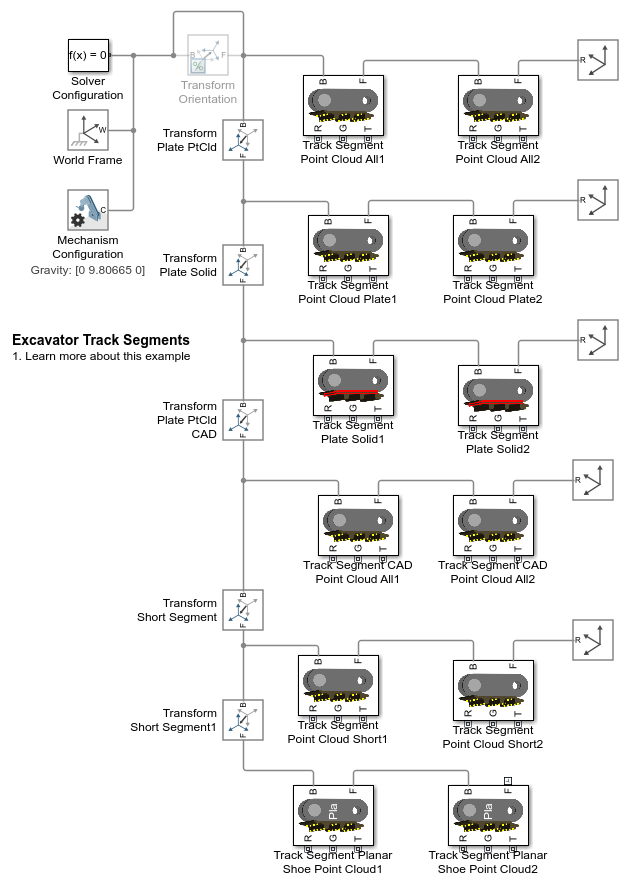

Excavator Track Segment Test
(return to Tracked Vehicle Model with Simscape Overview)
This example shows track segments with different ground contact geometry. Point cloud and brick solid are integrated into the track segment and enable different methods of modeling the ground
Contents
Model
In this example, three pairs of track segments are shown. The mask parameters are set different from the default values to highlight the contact geometry.
Track Segment Point Cloud
Each track segment is composed of a chain link and a shoe. To streamline the contact force calculation, simpler geometry is connected to the Spatial Contact Force block.
- A sphere is used to model the pin contacting the sprocket.
- A brick is used to model the chain contacting the rollers and idler
- A point cloud is used to model the shoe plate contacting the ground. This enables the ground to be modeled using the grid surfaceblock.


Track Segment Plate Solid
Each track segment is composed of a chain link and a shoe. To streamline the contact force calculation, simpler geometry is connected to the Spatial Contact Force block.
- A sphere is used to model the pin contacting the sprocket.
- A brick is used to model the chain contacting the rollers and idler
- A brick solid is used to model contact with the ground. This permits the ground to be modeled using a Point Cloud with a set of arbitrary points.